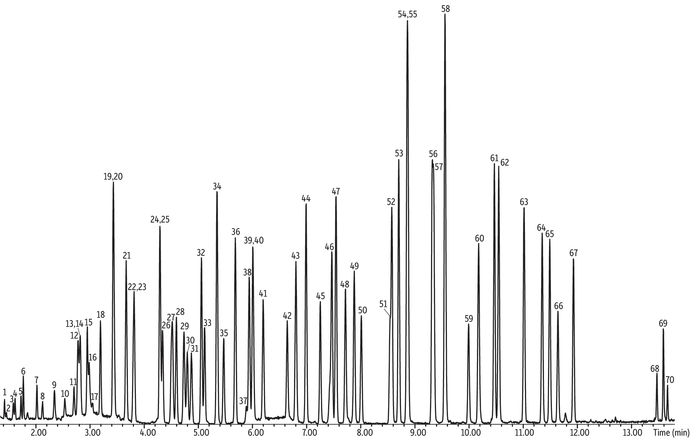

BOAchem: Beauty Of Analytics & Chemistry
Consultoría Especializada en el Área Farmacéutica para Laboratorios e IPS
Ofrecemos un servicio integral de consultoría enfocado en optimizar procesos, asegurar el cumplimiento normativo y mejorar la eficiencia operativa de laboratorios farmacéuticos e Instituciones Prestadoras de Salud (IPS).
Nuestros servicios incluyen:
• Auditoría y cumplimiento normativo: Asesoría en BPM (Buenas Prácticas de Manufactura), BPD (Buenas Prácticas de Distribución) y normativas INVIMA.
• Optimización de procesos farmacéuticos: Mejora de procedimientos en producción, almacenamiento, control de calidad y distribución.
• Gestión de calidad: Implementación y seguimiento de Sistemas de Gestión de Calidad (SGC) bajo normativas nacionales e internacionales.
• Capacitación técnica: Formación continua para el personal en temas regulatorios, farmacovigilancia, control de calidad y gestión de riesgos.
• Soporte en trámites regulatorios: Acompañamiento en registros sanitarios, renovaciones, modificaciones y actualización documental.
Contamos con experiencia en el sector y un equipo multidisciplinario que garantiza soluciones personalizadas, eficaces y sostenibles para su organización.
Ofrecemos un servicio de consultoría integral dirigido a laboratorios de análisis ambiental, con el objetivo de fortalecer su capacidad técnica, garantizar el cumplimiento normativo y mejorar sus procesos de calidad y operación en Colombia.
Nuestros servicios incluyen:
•Implementación y mejora del Sistema de Gestión de Calidad: Asesoría basada en la norma ISO/IEC 17025:2017 para acreditación ante el IDEAM.
•Preparación para auditorías internas y externas: Diagnóstico, simulacros de auditoría, planes de mejora y acompañamiento en procesos de acreditación o renovación.
•Validación y verificación de métodos analíticos: Desarrollo y validación de métodos conforme a criterios técnicos y regulatorios nacionales e internacionales.
•Capacitación técnica del personal: Formación en manejo de equipos, trazabilidad, control de calidad, incertidumbre de medición y normatividad ambiental aplicable.
•Soporte documental y técnico: Elaboración, revisión y actualización de procedimientos, manuales, instructivos, hojas de vida de equipos y formatos técnicos.
•Optimización de procesos operativos y analíticos: Análisis de desempeño, gestión de muestras, control de calidad interno y externo.
Nuestro equipo de consultores cuenta con amplia experiencia en el sector ambiental, con enfoque práctico, actualizado y adaptado a las exigencias del IDEAM y demás autoridades competentes.
Ofrecemos servicios de consultoría técnica y regulatoria orientados a laboratorios de análisis de alimentos, apoyando su fortalecimiento operativo, cumplimiento normativo y procesos de acreditación ante organismos como el ONAC, INVIMA y autoridades sanitarias del país.
Nuestros servicios incluyen:
• Implementación y fortalecimiento del Sistema de Gestión de Calidad: Asesoría completa bajo la norma ISO/IEC 17025:2017, incluyendo diagnóstico, documentación, procedimientos y acompañamiento hasta la acreditación.
• Validación de métodos analíticos: Desarrollo, verificación y validación de métodos para análisis físico-químico, microbiológico y nutricional, conforme a estándares nacionales e internacionales.
• Acompañamiento en procesos de acreditación: Preparación para auditorías internas y externas, atención a hallazgos y soporte en requisitos del ONAC y otras entidades.
• Cumplimiento regulatorio INVIMA: Asesoría en requerimientos técnicos y documentales para cumplir con la legislación sanitaria aplicable al análisis de alimentos y bebidas.
• Capacitación del personal técnico: Formación en buenas prácticas de laboratorio, control de calidad, manejo de equipos, trazabilidad e interpretación de resultados.
• Optimización de procesos analíticos: Mejora de flujos de trabajo, gestión de muestras, control de calidad interno y externo, e implementación de indicadores clave.
Contamos con un equipo multidisciplinario con amplia experiencia en laboratorios de alimentos, comprometido con brindar soluciones prácticas, efectivas y alineadas con las exigencias del sector.

Desarrollo de Metodologías, Optimización de Procesos y Soporte Técnico Integral
Brindamos un servicio de consultoría técnica dirigido a laboratorios de análisis fisicoquímico, con enfoque en el desarrollo e implementación de metodologías analíticas, fortalecimiento del sistema de calidad y acompañamiento integral desde la adquisición de equipos hasta la validación de métodos.
Nuestros servicios incluyen:
• Desarrollo, validación y verificación de metodologías analíticas:
Diseño e implementación de métodos fisicoquímicos ajustados a normativas nacionales (INVIMA, ICA) e internacionales (USP, AOAC, ISO, FDA), con enfoque en precisión, exactitud y sensibilidad.
•Selección y adquisición de equipos y materiales de laboratorio:
Asesoría técnica en la definición de especificaciones, evaluación de proveedores, análisis de costo-beneficio y acompañamiento durante la instalación, calificación y puesta en marcha de equipos analíticos.
•Implementación de sistemas de calidad bajo ISO/IEC 17025:2017:
Diagnóstico del laboratorio, elaboración de documentación, estructuración de procedimientos y acompañamiento en auditorías internas y externas.
•Capacitación técnica del personal:
Formación especializada en operación de equipos (espectrofotometría UV-VIS, HPLC, pH-metría, conductividad, entre otros), interpretación de resultados, control de calidad analítico e incertidumbre de medición.
•Optimización de procesos fisicoquímicos:
Evaluación y mejora del flujo analítico, gestión eficiente de muestras, tiempos de respuesta, control de errores y estandarización de procesos.
¿A quién va dirigido?
• Laboratorios en proceso de montaje o expansión.
• Laboratorios que desean acreditar métodos o ampliar su alcance.
• Instituciones académicas o privadas que buscan mejorar su infraestructura técnica.
Contamos con consultores expertos en química analítica, aseguramiento de calidad y gestión de laboratorios, con experiencia práctica en diferentes sectores: alimentos, aguas, farmacéutica, cosméticos y agroindustria.d
Consultoría Técnica en Cromatografía Avanzada para Laboratorios de Análisis
Ofrecemos un servicio de consultoría altamente especializado para laboratorios que trabajan con técnicas cromatográficas, orientado al uso eficiente de equipos como GC-MS, GC-FID, GC-ECD, GC-NPD, HPLC y UHPLC, así como al desarrollo y validación de metodologías analíticas personalizadas.
Nuestros servicios incluyen:
•Asesoría en los fundamentos y manejo de equipos cromatográficos:
Capacitación práctica y soporte técnico en operación, mantenimiento, resolución de problemas y optimización de sistemas GC y HPLC/UHPLC, incluyendo configuraciones multicomponente como:
GC-MS (Espectrometría de masas)
GC-FID (Detector de ionización de llama)
GC-ECD (Detector de captura de electrones)
GC-NPD (Detector de nitrógeno-fósforo)
HPLC y UHPLC con detección UV, DAD, FLD, RID, entre otros.

•Desarrollo de metodologías desde cero:
Diseño, desarrollo e implementación de métodos cromatográficos adaptados a matrices específicas (alimentos, aguas, suelos, productos farmacéuticos, cosméticos, etc.), desde la selección de fase estacionaria hasta parámetros de corrida.
•Validación y verificación de métodos analíticos:
Validación según guías nacionales e internacionales (USP, EMA, FDA, ICH Q2), incluyendo parámetros como exactitud, precisión, linealidad, robustez, límite de detección y cuantificación.
•Optimización de condiciones cromatográficas:
Ajuste de fases móviles, gradientes, tiempos de retención, picos coeluidos y reducción de tiempo de análisis, mejorando eficiencia y resolución.
•Soporte documental y cumplimiento normativo:
Elaboración de protocolos de validación, hojas de trabajo, manuales de operación, procedimientos y documentación para procesos de acreditación (ISO/IEC 17025, INVIMA, ONAC, entre otros).
¿A quién va dirigido?
•Laboratorios de alimentos, aguas, farmacéuticos, cosméticos, ambientales, químicos y agroindustriales.
•Instituciones educativas y centros de investigación que requieran formación técnica o desarrollo de métodos propios.
•Empresas en proceso de adquisición o actualización tecnológica de sus sistemas cromatográficos.
Contamos con un equipo de consultores con experiencia comprobada en cromatografía avanzada, química analítica aplicada y validaciones conforme a normativas internacionales.
Consultoría Especializada en Validaciones Analíticas para Laboratorios
Ofrecemos un servicio integral de consultoría para laboratorios que requieren validar métodos analíticos según estándares nacionales e internacionales. Nuestro enfoque combina rigor técnico, cumplimiento normativo y aplicabilidad práctica, garantizando resultados reproducibles, trazables y confiables.
Servicios ofrecidos:
•Planeación estratégica de validaciones:
Diseño del protocolo de validación conforme al tipo de método (cuantitativo, cualitativo, identificación, límite) y matriz analizada.
•Ejecución y análisis de validaciones:
Acompañamiento en la ejecución práctica del plan de validación, análisis estadístico y documentación de resultados.
•Documentación técnica completa:
Elaboración de protocolos, reportes, hojas de cálculo, procedimientos operativos estandarizados (POE) y hojas de trabajo.
Parámetros de validación incluyen:
•Especificidad / Selectividad
Capacidad del método para distinguir el analito de otros componentes presentes (impurezas, excipientes, interferencias de matriz).
•Linealidad
Evaluación de la proporcionalidad entre la respuesta analítica y la concentración del analito, con análisis de regresión lineal.
•Rango
Intervalo entre las concentraciones más bajas y más altas donde el método demuestra precisión, exactitud y linealidad.
•Límite de Detección (LOD)
La menor cantidad de analito que puede detectarse, aunque no necesariamente cuantificarse con precisión aceptable.
•Límite de Cuantificación (LOQ)
La menor concentración del analito que puede cuantificarse con precisión y exactitud adecuadas.
•Precisión (Repetibilidad y Precisión intermedia):
Repetibilidad (intra-analista, intra-equipo)
Precisión intermedia (entre analistas, días, equipos)
Se evalúa mediante el %RSD de los resultados.
•Exactitud (Recuperación):
Grado de concordancia entre el valor medido y el valor real o aceptado, generalmente evaluado mediante pruebas de recuperación.
•Robustez:
Evaluación de la confiabilidad del método ante pequeñas variaciones controladas de condiciones (pH, temperatura, flujo, etc.).
•Estabilidad de muestras y soluciones:
Confirmación de la integridad del analito bajo condiciones de almacenamiento y análisis.
•Capacidad del sistema (System Suitability):
Verificación de que el sistema analítico está funcionando adecuadamente antes de la ejecución del análisis.
¿A quién está dirigido este servicio?
•Laboratorios que buscan acreditar métodos ante ONAC o IDEAM bajo ISO/IEC 17025.
•Laboratorios que deben cumplir con regulación sanitaria (INVIMA, ICA, FDA, EMA, etc.).
•Empresas que desarrollan o modifican métodos para nuevos productos o matrices complejas.
•Centros de investigación que requieren validaciones robustas para publicación o transferencia tecnológica.
Contamos con profesionales altamente capacitados en química analítica, estadística aplicada y gestión de calidad en laboratorio, con experiencia en sectores como alimentos, ambiental, farmacéutico, cosmético, clínico y agroindustrial.
Servicio de Auditorías Internas para Laboratorios
Evaluación objetiva, mejora continua y preparación para la acreditación
Ofrecemos un servicio especializado de auditorías internas para laboratorios de ensayo y calibración, con el objetivo de evaluar el cumplimiento de su sistema de gestión, identificar oportunidades de mejora y asegurar la conformidad con normas como ISO/IEC 17025:2017, ISO 9001, o requisitos regulatorios de entidades como ONAC, IDEAM, INVIMA o ICA.
¿Qué incluye nuestra auditoría interna?
•Planificación de la auditoría:
Elaboración del plan de auditoría con enfoque por procesos, áreas, métodos analíticos y requisitos críticos del sistema de gestión.
•Ejecución objetiva e imparcial:
Auditoría realizada por profesionales competentes, con enfoque técnico y experiencia en laboratorios de análisis (fisicoquímico, microbiológico, ambiental, alimentos, farmacéutico, entre otros).
•Evaluación de cumplimiento en:
- Gestión documental
- Control de calidad interno y externo
- Calibración y mantenimiento de equipos
- Competencia del personal
- Trazabilidad metrológica
- Validación de métodos
- Gestión de riesgos y acciones correctivas
- Control de muestras, condiciones ambientales, y mucho más
•Elaboración del informe de auditoría:
Informe técnico con hallazgos clasificados (no conformidades, observaciones, oportunidades de mejora) y recomendaciones prácticas.
•Acompañamiento en el cierre de hallazgos:
Asesoría para la formulación de acciones correctivas y preventivas efectivas, conforme a metodologías como el ciclo PHVA.
Beneficios del servicio:
•Diagnóstico objetivo antes de auditorías externas (ONAC, IDEAM, clientes, entidades regulatorias).
•Fortalecimiento del sistema de gestión de calidad.
•Detección anticipada de desviaciones o incumplimientos.
•Cumplimiento de los requisitos obligatorios de autoevaluación interna.
•Mejora continua del desempeño técnico y organizacional.
Dirigido a:
•Laboratorios acreditados o en proceso de acreditación bajo ISO/IEC 17025
•Laboratorios que deben cumplir requisitos regulatorios en Colombia
•Laboratorios internos de empresas industriales, agrícolas, ambientales, farmacéuticas, clínicas o académicas
Contamos con auditores formados y con experiencia práctica en diversos tipos de laboratorios. Nuestro enfoque es técnico, confidencial, riguroso y orientado a resultados.
BOAchem: Beauty Of Analytics & Chemistry | Juntos en la ciencia.
Bogotá D.C., Colombia | Mosquera Planadas, Colombia
¡Contáctanos!
E-mail: comercial@boachem.com
WhatsApp/Teléfono: (+57) 316 6626 025
Solo WhatsApp: (+57) 320 339 3083